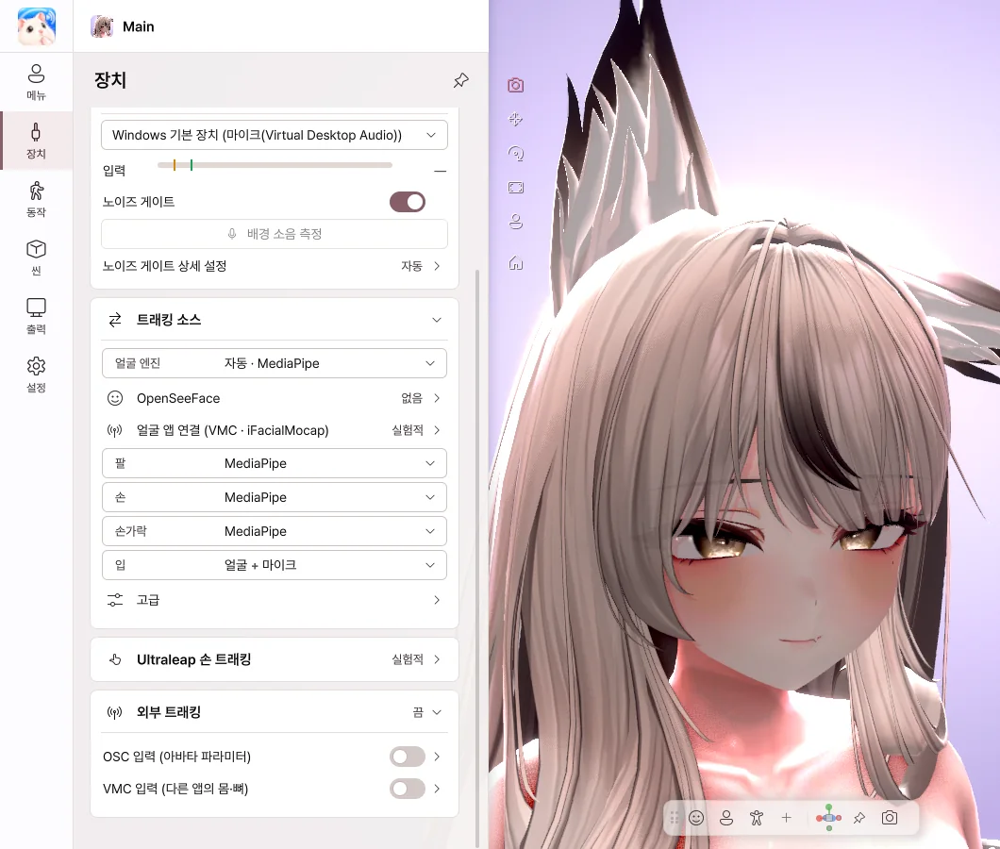

6. 장치
웹캠과 마이크

- 웹캠 스위치를 켜면 얼굴과 손 트래킹이 시작됩니다.
- 카메라 목록에서 사용할 웹캠을 고릅니다.
- 정면 보정 — 지금 얼굴 방향을 정면으로 맞춥니다.
- 트래킹 품질 — 게임과 함께 쓸 때는 균형이나 절약을 권장합니다.
- 마이크 스위치를 켜면 말할 때 입이 움직입니다.
- 노이즈 게이트 — 키보드 소리 같은 잡음에는 입이 움직이지 않게 합니다.
- 배경 소음 측정 — 조용히 있는 동안 버튼을 누르면 잡음 기준을 자동으로 맞춥니다.
트래킹 소스

- 얼굴, 팔, 손, 손가락, 입을 무엇으로 움직일지 부위마다 고릅니다.
- 입을 얼굴 + 마이크로 두면 말할 때는 목소리, 아닐 때는 입 모양을 따라갑니다.
- 얼굴 앱 연결 — 웹캠 대신 iPhone(iFacialMocap) 같은 앱에서 얼굴을 받습니다.
- Ultraleap 손 트래킹 — Leap Motion 장치로 손을 추적합니다.
- 외부 트래킹 — OSC · VMC로 다른 앱과 연결합니다.
Ultraleap과 OSC · VMC는 실험적 기능입니다. 정상적으로 동작할 것으로 예상하지만, 아직 개발자 환경에서 모든 장치와 앱으로 테스트하지는 못했습니다.
iPhone으로 얼굴 트래킹 (iFacialMocap)
- iPhone과 PC를 같은 Wi-Fi에 연결합니다.
- 얼굴 앱 연결에서 소스를 iFacialMocap으로 고르고, 이 PC의 주소를 복사합니다.
- iPhone의 iFacialMocap 앱에서 톱니바퀴 › Destination IP address에 그 주소를 입력합니다.
- 스위치를 켜면 iPhone의 표정이 아바타에 반영됩니다.
iPhone 주소 (선택) 칸은 비워 두어도 됩니다. iFacialMocap 앱에서 Destination IP address를 쓰지 않을 때만 입력하세요.